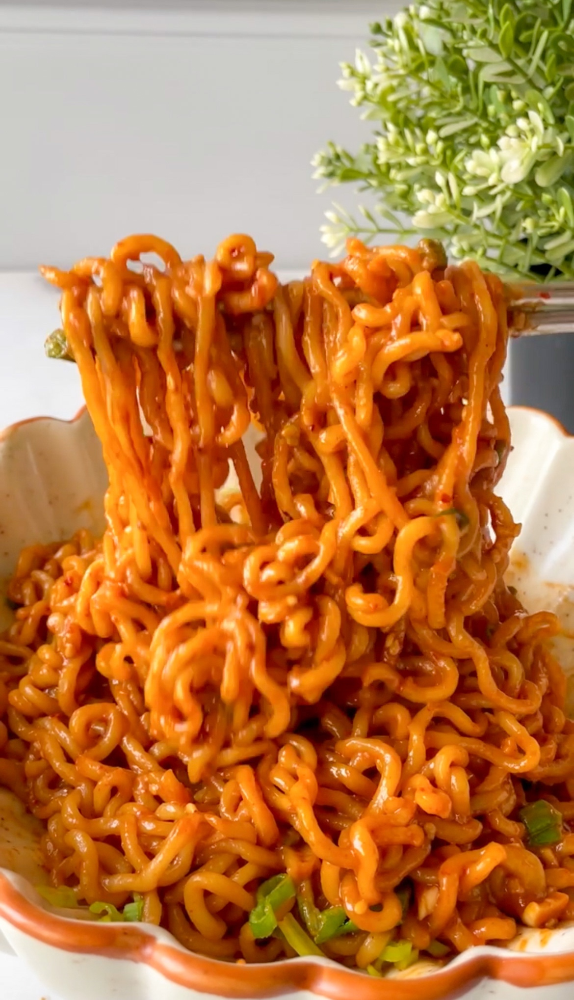

How to make spicy noodles!

Noodles are...
a very versatile dish that you can eat anytime! With that
being said our noodle recipe utilizes the super spicy korean
fire noodles to bring up the heat. CAN YOU HANDLE IT????
Ingredients:
- a packet of korean fire noodles
- water
- optinally: onions, cheese, protein of choice
Cooking Steps:
- put some water into a dish and warm it to a boil
- once boiling, toss in the noodles
- feel free to toss in any spices that you have or dried veggies
- cook for 10 minutes or until you your noodles are of preferred firmness
- take out the water and combine the spicy sauce
- You can now serve orrrr...
- Cook further on a pan while tossing in proteins or vegetables
Back to top
Return to main page